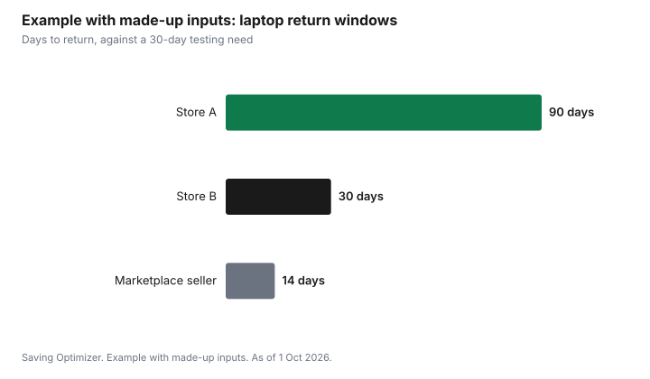

Technology · Canada
Where to Buy Electronics in Canada: Return, Price-Match and Warranty Policies Compared
Where to buy electronics in Canada depends on three policies as much as on price: how long you have to return the item, whether the store will match or adjust a lower price, and what warranty help comes with it. As of 1 Oct 2026, Best Buy gives 30 days on most products and 15 days on devices bought with a carrier plan, Costco gives 90 days on major electronics and extends some warranties to two years, and Amazon.ca gives 30 days on most items. Price-match rules differ even more. This page compares the published terms; it does not rank the stores.
Key takeaways
- Return windows run from 15 days for carrier phones to 90 days for Costco's listed electronics. Read the item's policy, not the store's headline.
- Price matching and price adjustment are different. Costco adjusts only to its own price. Best Buy's guarantee excludes Black Friday, Cyber Monday and Boxing Day. Walmart ended Ad Match on 15 October 2020.
- Costco extends the manufacturer's warranty to two years on TVs, projectors, major appliances and computers, excluding tablets, if the manufacturer's is shorter.
- In Quebec, from 5 October 2026, new phones, tablets, computers and consoles carry a 3-year legal warranty of good working order, and TVs 4 years, wherever you buy.
- Marketplace sellers on retailer sites follow their own return terms and are often excluded from price matches.
Return windows
A return window is the time you have to change your mind. It matters more for electronics than for most purchases, because a laptop's keyboard or a TV's picture is hard to judge in a store. Windows usually run from the purchase date in store, or from delivery online.
| Retailer | General electronics window | Notes |
|---|---|---|
| Best Buy | 30 days from purchase or delivery | 15 days for devices bought with a carrier plan, 30 days for people who self-identify as having a disability; marketplace items follow the seller |
| Costco | 90 days for TVs, computers, tablets, cameras, smart watches, cellular phones and other listed electronics | Cellular phone details vary by carrier contract |
| Amazon.ca | 30 days from delivery for most items | Laptops, desktops and Kindles not returnable after 30 days; third-party sellers have their own terms |
| Walmart | Check walmart.ca for the item | Marketplace sellers must offer at least 14 days on computers, tablets, consoles and similar electronics |
| Staples, Canadian Tire, Home Depot | Check the store's current policy for electronics |
For phones on a carrier plan, the CRTC's Wireless Code sets a trial period of at least 15 days, or 30 days for a person who self-identifies as having a disability, with usage limits. Best Buy's 15-day window for carrier devices follows that code. The holiday electronics returns guide covers gift receipts and restocking fees.
Price matching and price adjustment
A price match beats a competitor's current price at the moment you buy. A price adjustment refunds the difference if the same store's price drops after you buy. Some stores do one, some do both, and the exclusions decide whether either helps during a sale.
| Retailer | Competitor price match | Own-price adjustment |
|---|---|---|
| Best Buy | Low Price Guarantee; excludes Black Friday, Cyber Monday, Boxing Day, marketplace and clearance | Under the same guarantee; 30 days, 60 for My Best Buy members, per its terms |
| Costco | No competitor match | Within 30 days of purchase; warehouse at the membership counter, Costco.ca by form |
| Staples | Yes, with conditions; Amazon.ca only when sold and shipped by Amazon | 14 days for electronics |
| Canadian Tire | Yes, Canadian retailers' .ca sites, within 200 km | 30 days |
| Home Depot | Matches at the time of purchase | Check the store |
| Walmart | Ad Match ended 15 October 2020 | Check the store |
Stores generally want the identical item, in stock, at a current price. Retailer-specific model numbers can block a match. The price adjustment guide and the price-tracking guide help with the evidence.
Warranty and support extras
Every new product carries the manufacturer's warranty. Some stores add to it. Costco's Technical and Warranty Service gives members free technical support and extends the manufacturer's warranty to two years from purchase on televisions, projectors, major appliances and computers, excluding tablets, when the manufacturer's is shorter. Amazon's own Fire Kids tablets carry a two-year Worry-Free Guarantee. Other stores sell paid protection plans; the protection plans guide and the extended warranty guide explain how to compare them with what you already have.
In Quebec, the Office de la protection du consommateur says that from 5 October 2026 a legal warranty of good working order applies automatically and free to listed new goods: 3 years for phones, tablets, computers and game consoles, and 4 years for televisions, from delivery. It applies in addition to the manufacturer's warranty.
How to choose for one purchase
- Decide how much time you need to test the item at home, and remove stores whose window is shorter.
- Check whether the item is sold by the retailer or a marketplace seller. The retailer's policy may not apply to a marketplace item.
- Check the price-match and adjustment terms for the dates you are buying, especially around Black Friday and Boxing Day.
- Compare warranty extras with the manufacturer warranty and any coverage from your credit card.
- Then compare price.
Example with made-up inputs: return days on a laptop
These numbers are an example with made-up inputs, not a store comparison. A buyer wants at least 30 days to test a laptop. A made-up Store A gives 90 days, Store B 30 days, and a marketplace seller 14 days. Store A and B pass; the marketplace seller does not, even if its price is lower.
| Seller | Return days | Meets 30-day need |
|---|---|---|
| Store A | 90 | Yes |
| Store B | 30 | Yes |
| Marketplace seller | 14 | No |

Sources
- Best Buy Canada, Return and Exchange Policies and Low Price Guarantee, as of 1 Oct 2026. 30 days for most products; 15 days for devices with a carrier plan, 30 days with a self-identified disability; exclusions for Black Friday, Cyber Monday, Boxing Day, marketplace and clearance.
- Costco Canada, return policy and Technical and Warranty Service, as of 1 Oct 2026. 90 days for listed electronics; two-year warranty extension on TVs, projectors, major appliances and computers excluding tablets; price adjustment within 30 days.
- Amazon.ca Return Policy and Items that You Can't Return, as of 1 Oct 2026. 30 days from delivery for most items; laptops, desktops and Kindles not returnable after 30 days.
- Walmart Marketplace Canada returns policy, as of 1 Oct 2026. Minimum 14 days on listed electronics categories for marketplace sellers. Walmart Ad Match ended 15 October 2020.
- Staples Canada, Canadian Tire and Home Depot Canada price match policies, as of 1 Oct 2026.
- Office de la protection du consommateur (Quebec), warranty of good working order, as of 1 Oct 2026. From 5 October 2026; 3 years for phones, tablets, computers and consoles; 4 years for TVs.
- CRTC, Wireless Code. Trial period of at least 15 days, 30 days for a self-identified disability.
- Store A, Store B and the marketplace seller in the example are made up, as are their return days.
Frequently asked questions
Which Canadian store has the longest return window for electronics?
Of the published policies compared here, Costco lists 90 days for TVs, computers, tablets, cameras, smart watches, cellular phones and other listed electronics as of 1 Oct 2026. Best Buy and Amazon.ca list 30 days for most items. Exceptions apply, so read the item's policy.
Does Best Buy price-match Black Friday prices?
As of 1 Oct 2026, Best Buy Canada's Low Price Guarantee excludes Black Friday, Cyber Monday and Boxing Day prices, along with marketplace and clearance items.
Does Costco price-match other stores?
No. Costco adjusts to its own lower price within 30 days of purchase, at the warehouse membership counter or through a form for Costco.ca orders. It does not match competitors.
Does Walmart Canada still price-match?
Walmart Canada ended its Ad Match policy on 15 October 2020. Check walmart.ca for its current return and pricing terms.
What warranty do electronics have in Quebec?
From 5 October 2026, the Office de la protection du consommateur says a legal warranty of good working order applies automatically to listed new goods: 3 years for phones, tablets, computers and game consoles, and 4 years for televisions, from delivery.
Researched and drafted with AI assistance and fact-checked against official Canadian sources. How we create content.
Disclosure: Retailers are compared on published policies only; this is not a ranking. Saving Optimizer may earn a commission if a partner link is added later. No partnership is claimed. Education only. Policies change; read the current terms before you buy.